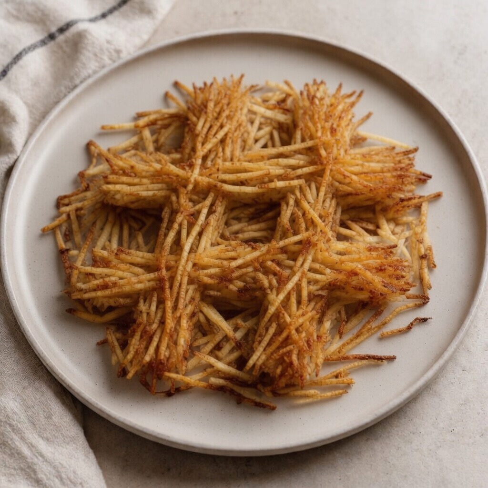

Recipe of the Day
Golden Hash Browns

Today's recipe are the crispiest, most golden Hash Browns you will ever sink your teeth into. Sharpen your knife and oil your pan as we fry up a little slice of heaven.
Directions
- Slice onions and potatoes in thin Julian strips. Rinse under cold water and pat dry with paper towels.
- Heat skillet to medium and coat with butter.
- Season potato and onion mix before adding to pan.
- Cook for 5-10 minutes, ensuring the potato/onion mix has carmelized to a crust before flipping. Cook another 5 minute or until golden brown
Ingredients
- 2 Russet Potatoes
- .5 Yellow Onion
- 3 Tbsp Butter
- 1 tsp Salt
- 1 tsp Black Pepper